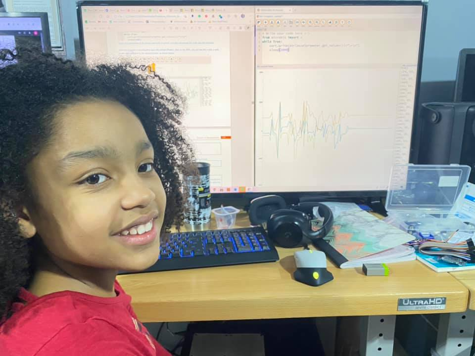
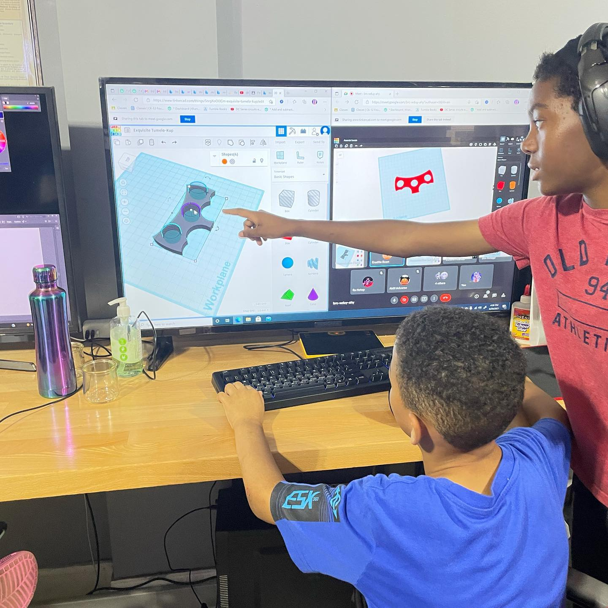
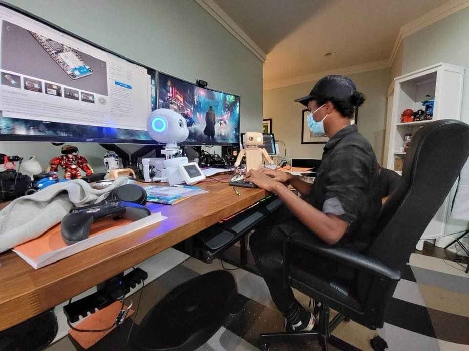
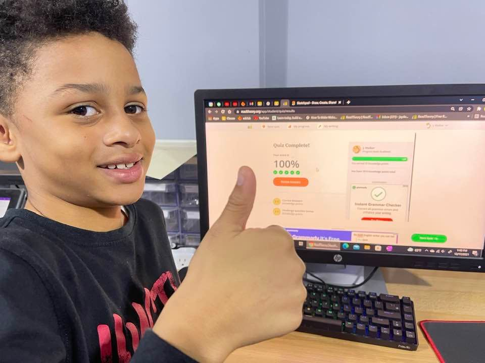
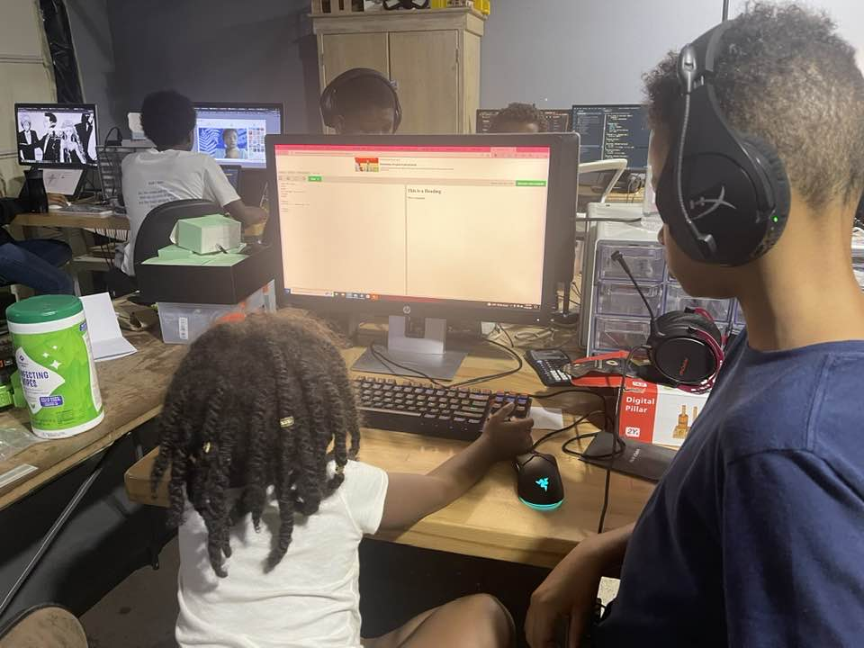
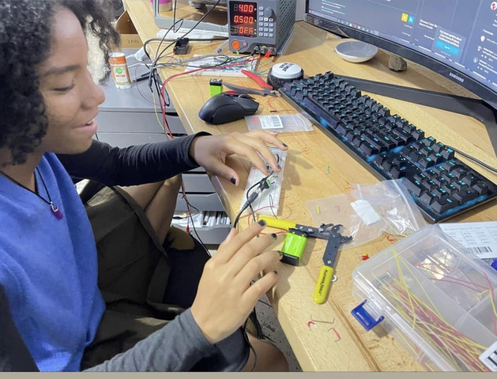
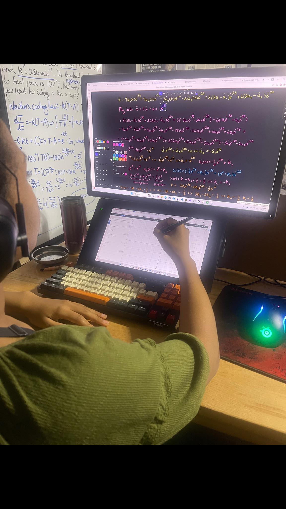
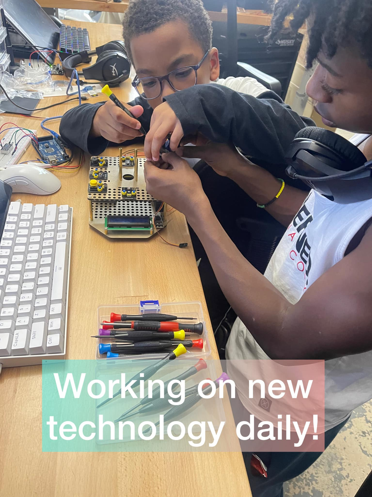
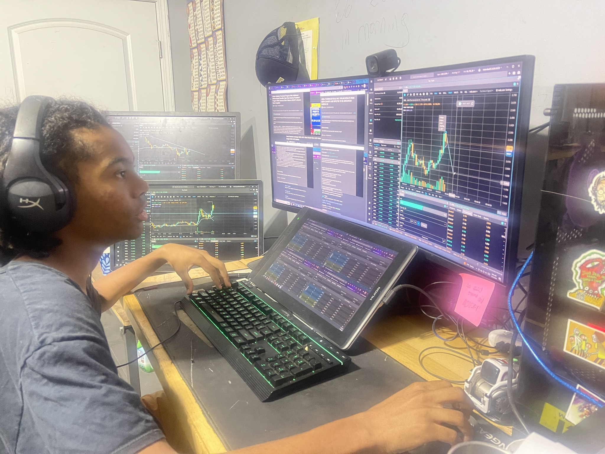

Atlanta's K–12 Virtual & Online Microschool | Homeschool Alternative
Akili Universe is Atlanta's premier online micro school and homeschool alternative, offering research-based K–12 education in AI, engineering, and critical thinking. Serving students of all levels in Georgia and nationwide — we don't just find the gift, we help every student obtain it.
An online microschool for any K–12 student — Atlanta-based, serving Georgia families and students nationwide.
Based in Atlanta, Georgia, Akili Universe is a structured online microschool and homeschool alternative where academic rigor meets real-world innovation. Our K–12 students engage in groundbreaking research — from graph theory and artificial intelligence to microprocessor design — and go on to lead in the world's top universities and companies. Every graduate has earned all available scholarships in their category and attended institutions ranked in the top 5 or top 10 in their field.
A microschool is a small, personalized learning environment that blends the flexibility of homeschooling with the structure and rigor of a traditional school. Students receive individualized instruction, move at their own pace, and follow a curriculum designed around real outcomes — not standardized averages. Akili Universe is an online microschool serving K–12 students across Atlanta, Georgia, and the nation.
Homeschooling is typically parent-led with no formal accountability. A microschool like Akili Universe provides certified instruction, a structured research-based curriculum, and measurable results — giving families the freedom of homeschooling with the outcomes of a top-tier school. Our students average a 1400 SAT, earn up to two years of college credit, and achieve 100% scholarship placement. Any student. Any level. We don't find the gift — we help every student obtain it.
Our graduates average an A in AP and Dual Enrollment coursework and enter college with up to two years of university credit — giving Atlanta-area and Georgia homeschool families a significant financial and academic head start.
Students engage in advanced research in AI, robotics, and graph theory. Many have earned prestigious internships at AI-driven business software companies, with some moving directly into full employment — outcomes unmatched by traditional homeschool programs.
Student initiative thrives here. Our learners — from Atlanta, Georgia, and across the country — have founded a vibrant engineering club with over 70 active members, demonstrating the entrepreneurial spirit we nurture in every student.
With an average SAT score of 1400 and 100% scholarship placement, our track record speaks for itself. Graduates attend Georgia Tech, Carnegie Mellon, Stanford, Cornell, and other top-ranked institutions — results that speak for every family seeking the best homeschool alternative in Atlanta and Georgia.
A rigorous virtual and online K–12 curriculum in STEM, humanities, and the arts — serving Atlanta, Georgia families and students nationwide.
Every graduate has earned all available scholarships in their category.
Engineering & Computing
Computer Science & AI
Engineering & Research
STEM & Liberal Arts
Research & Medicine
Engineering & Technology
STEM & Social Sciences
Student projects, research, and community moments.









Ready to join Akili Universe? We'd love to hear from you.